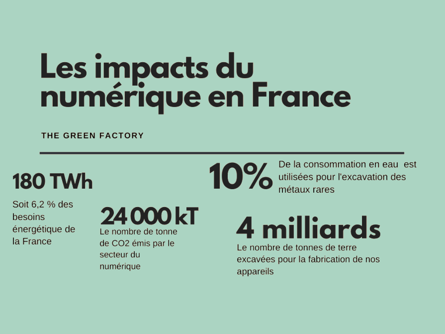
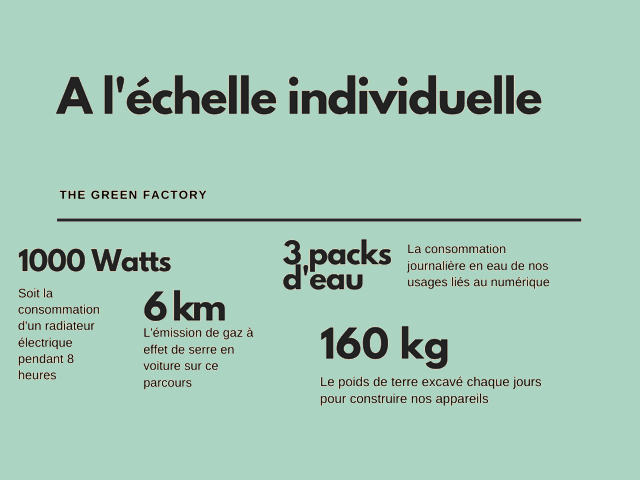

Contenu du cours
Qu’est-ce que le Green I.T. ?
Le green IT ou green computing, a pour objectif de réduire l'empreinte carbone générée par les Systèmes d'Information des entreprises tout en leur permettant de réaliser des économies. Les deux axes majeurs de développement du green-IT sont :- - L'utilisation de produits verts à faible consommation d'énergie: Les éditeurs et les constructeurs redoublent d'efforts afin de mettre sur le marché des produits qui consomment moins d'énergie et des logiciels intelligents capables de gérer l'utilisation des ressources en temps réel.
- - La mise en œuvre de la virtualisation des serveurs et des postes de travail: La virtualisation permet de réduire le nombre de machines utilisées dans un Système d'Information tout en apportant puissance de traitement, évolutivité et maîtrise des coûts !
L’impact du numérique en France


Le numérique se répartit en 3 axes d’impacts environnementaux en France :
| Utilisateurs | Réseaux | Centres informatiques | |
|---|---|---|---|
| Energie | 64% | 21% | 15% |
| GES | 84% | 10% | 6% |
| Eau | 91% | 5% | 4% |
| Ressources | 79% | 15% | 6% |